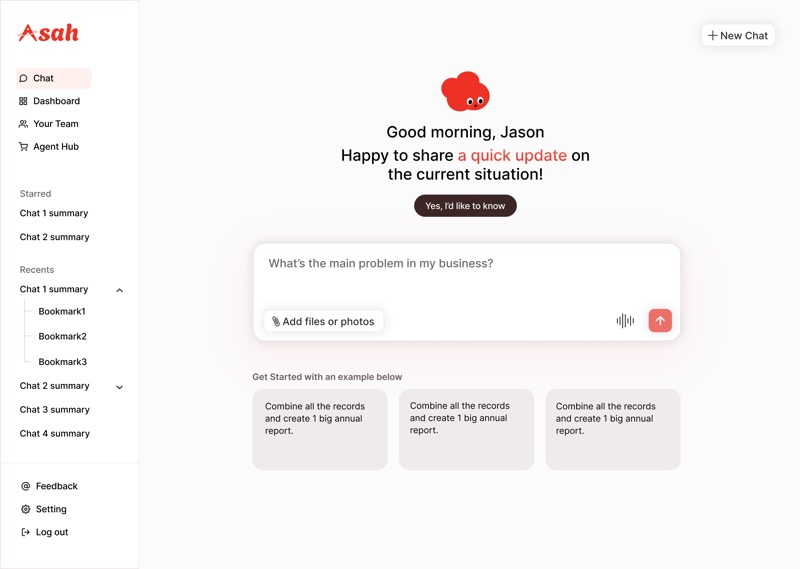
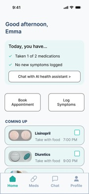
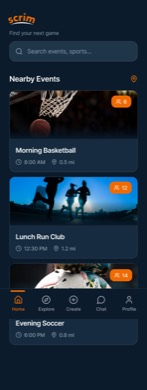

I design AI that feels human.
Seunghee (Kelly) Chu — UX Designer
Selected work
-

Asah
An AI business manager that feels like an employer, not another tool.
-
02

Health U
Healthcare in one place — so the patient stops being the admin.
-
03

Scrim
Nearby activities, and the people to do them with.
-
04
Parents' GPT
A personal AI, designed for the user I love most.
Warm enough to use, credible enough to trust.
I'm a UX designer interested in making AI feel less like AI. The question I keep returning to — across an AI business manager, a chronic-illness assistant, and a workout-meetup app — is the same one: how do you make something warm enough to use, but credible enough to trust? I study UX Design at SCAD, and I tend to design and build in the same hour.
- Focus
- AI/UX · interaction · design + build
- Tools
- Figma, Cursor, Rhino, HTML/CSS/JS
- Now
- SCAD, UX Design
Try it — drag toward warm or clinical
Got it — here's what I found. Three options.
At 100: users trust it less when it's wrong.
Built with code
Built with code. The corner of my practice where I bypass Figma and just make the thing.
One UI structure, three radically different visual systems.
A desktop interface that switches between Overgrown Ruins, Divine, and Cyberpunk — same bones, three skins. It's the project where I tested how much a UI can change on the surface while staying structurally honest underneath.
An interactive mission planner. Built to do, not look like it would.
Project Exodus · Mission Planner — a small interactive piece I built to prove I can make an interface that responds in real time, not just one that sits there.
Models from the corner of my practice that's about hands and form.
A small gallery of Rhino 3D work — modeling for the pleasure of figuring out what a thing wants to be.
Parents' GPT
A personal AI assistant I'm building for my parents — the closest the make AI feel human question gets to my own life. The user I love most, and want least to confuse.
- How much an AI assistant should anticipate vs. ask, when the user isn't fluent in AI.
- What the interface looks like when there is no "prompt" — only a conversation that already started.
— K